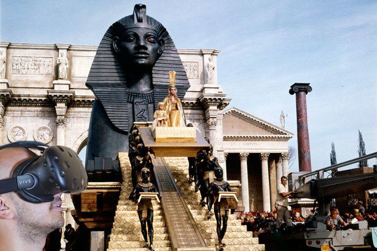
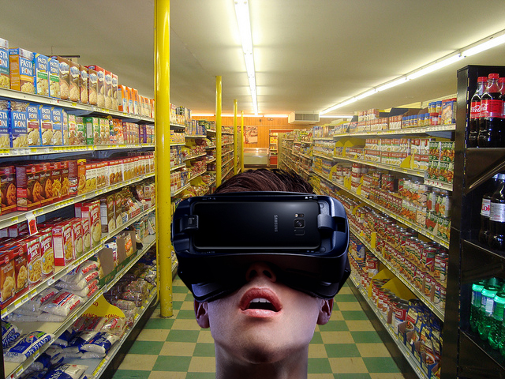
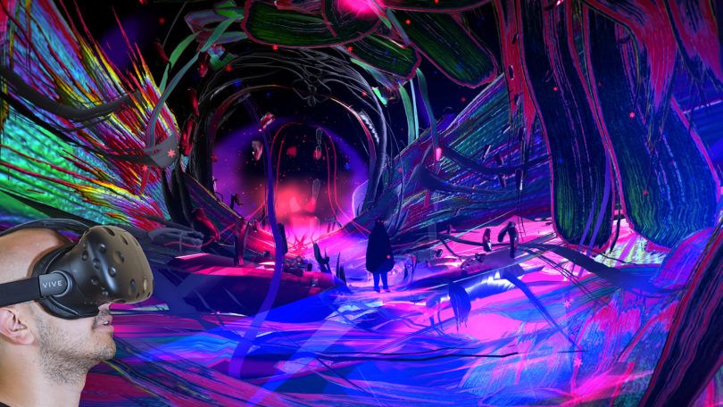
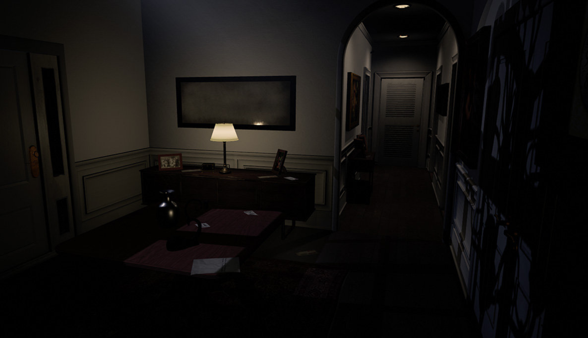

Virtual Reality (VR) gat over het presenteren van een hele virutele realiteit, je kijkt door een bril naar een compleet gemaakte omgeving die niks met de fysieker realiteit te maken heeft. Augemented Reality (AR) slaat juist op het projecteren van informatie op de fysieke realiteit. Denk hierbij aan het spel Pokemon GO, de dieren waren te zien in de echte omgeving.
Voor deze opdracht moesten er drie onderwerpen gekozen worden om een VR/AR concept voor te bedenken. Ik heb gekozen voor de onderwerpen educatie, angst therapie en kunst/museums.
Een idee voor educatie met VR heeft volgens mij meestal te maken met het onderwijs 'leuker' en dus aantrekkelijker te maken voor kinderen. Het lijkt mij een heel tof idee als het over een geschiedenis les over 'Egypte' gaat en de kinderen kunnen een VR bril opzetten en zien daar ook daadwerkelijk het verhaal worden afgespeeld. Als zij het over Cleopatra hebben in de les zullen zij in VR ook echt Cleopatra en de besproken gebeurtenis zien. Honderd keer leuker dan een boek lezen natuurlijk. 
Voor angsttherapie kan VR ook een uitkomst zijn. Mensen met pleinvrees kunnen nu oefenen door naar bepaalde situaties te 'gaan' zoals naar de winkel. Door hier lang genoeg mee te oefenen maar er toch niet echt te zijn, is de drempel veel lager dan dat ze er daadwerkelijk heen zullen gaan. Ze kunnen hierdoor rustig en oke worden met de situatie en uiteindelijk niet meer bang zijn om hier in het echt naar toe te gaan. 
Middels VR zou je ook kunstwerken kunnen maken, je hebt in principe een hele wereld aan je voeten als je met een VR bril werkt. Ooit werd een schilderij gemaakt op een canvas, de VR wereld kan het canvas van de toekomst worden. Je wordt hierdoor echt opgeslokt in het kunstwerk, voor kunstenaars die dit willen bereiken is een VR bril natuurlijk een uitkomst. Je wordt echt 1 met het kunstwerk. Je kan nu zelfs interactie hebben met het kunstwerk, het opent hele nieuwe deuren voor kunstenaars. 
Als onderzoek heb ik het voorbeeld van een VR wereld of eigenlijk een spel genaamd Paranormal Activity 'Lost Souls'. Dit is een spel gebaseerd op een horror film over geesten en satanisme. Deze spellen kwamen eerder al uit op de Playstation maar nu zijn ze dus ook beschikbaar voor o.a de HTC Vive. De bedoeling van dit spel is heel simpel, je in je broek laten plassen van angst. Het interessante hiervan vind ik dat mensen dus ook daadwerkelijk angst voelen bij dit spel. Op vele filmpjes is te zien dat mensen een daadwerkelijke angst reactie hebben zoals hun handen voor hun lichaam of bukken tot de grond. Dat je dit kan bereiken middels VR vind ik heel erg interessant, je kan hier dus echte emoties mee op wekken of mensen dit nu fijn vinden of niet. Ik denk dat dit een grondlegger kan zijn van heel wat spannends dat nog moet komen. Het spel is gebouwd door VR Werx en zij werken samen met Proprietary Technology om dit soort werelden te maken. Klik hier voor meer informatie 
AR en VR vind ik van alle onderwerpen het allerleukste. Deze ga ik dan ook zeker kiezen als nummer 1 tijdens de HCI weken. Op dit moment vind ik dat VR zeker nog niet op de dagelijkse basis en door iedereen gebruikt wordt, vooral denk ik omdat het nog aardig prijzig is en omdat je bepaald apparatuur nodig hebt zoals een hele sterke computer om het uberhaupt te laten werken. Wel vind ik dat hier zoveel potentie in zit. Je kan letterlijk een eigen wereld creeeren, ik vind het bijna een beetje op magie lijken. Je kunt andere realiteiten maken dan deze wereld en je kunt het ook voor zoveel doeleinden gebruiken. Je kunt het voor de lol gebruiken zoals games, voor educatie doeleinden maar zelfs voor therapie. Het enigste waar ik in de verre toekomst een klein beetje bang voor ben als de VR echt heel goed ontwikkeld is, is dat de VR wereld beter gaat zijn dan de echte wereld. Dat mensen niet meer naar de realiteit willen komen. Dus ook bij dit onderwerp denk ik dat het neerzetten van grenzen ook een heel belangrijk iets gaat zijn in de toekomst, VR moet immers niet onze hele wereld letterlijk overnemen.